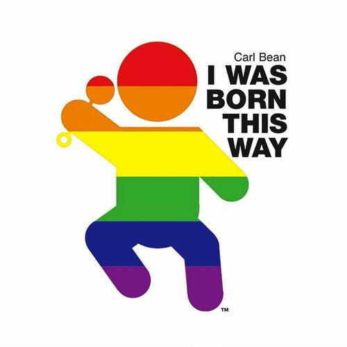

Carl Bean
Carl Bean was an African-American singer and activist who was the founding prelate of the Unity Fellowship Church Movement, a liberal Protestant denomination that is particularly welcoming of lesbians, gay and bisexual African Americans.
Complete Discography & Tracklists (3)